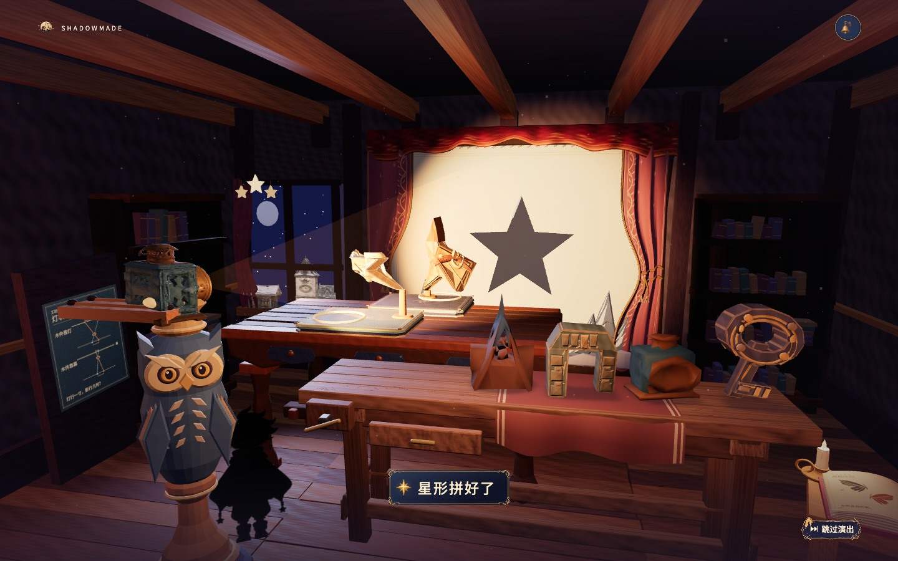
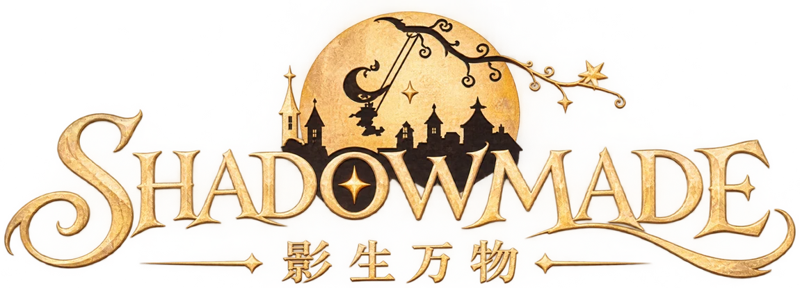
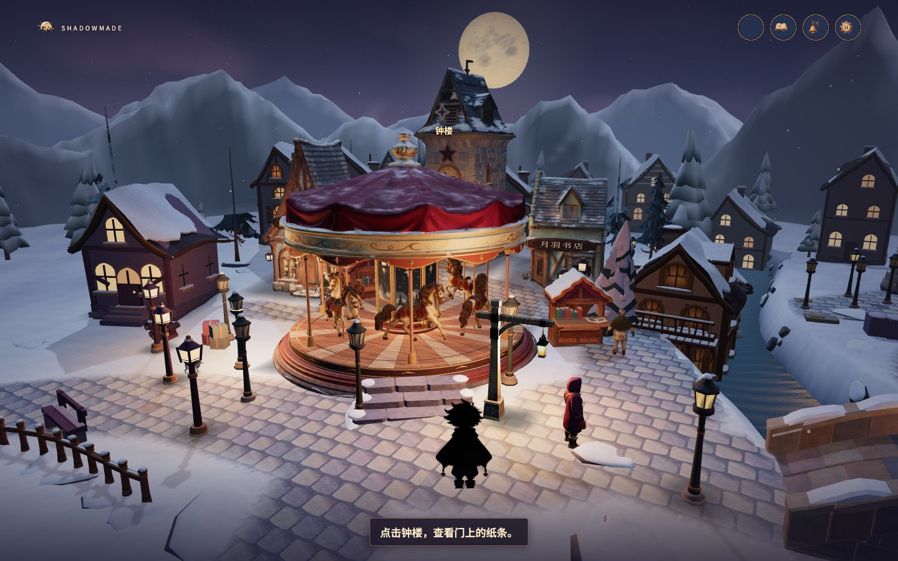
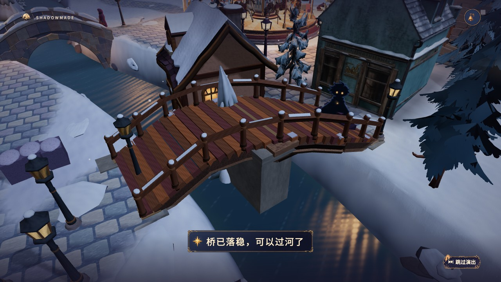
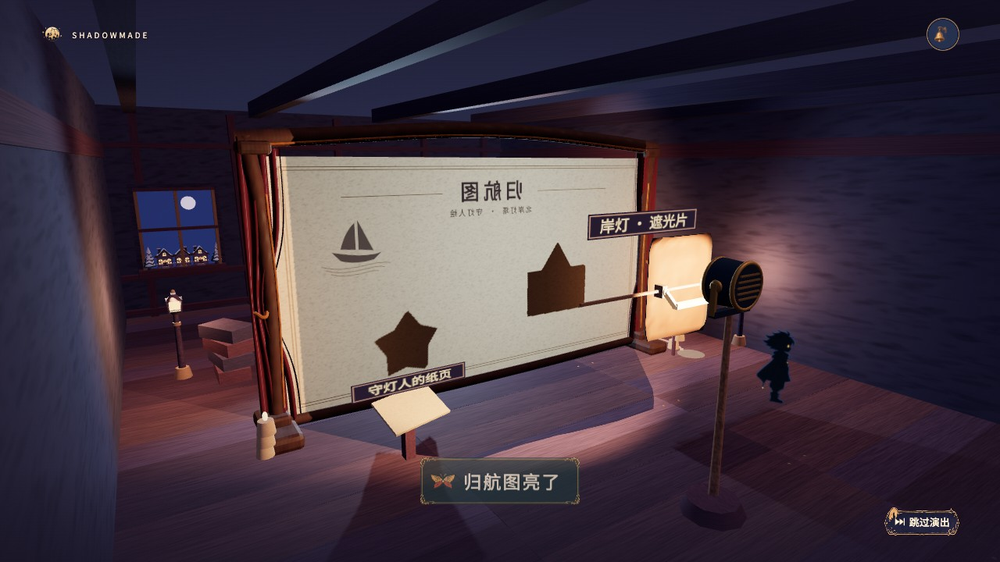
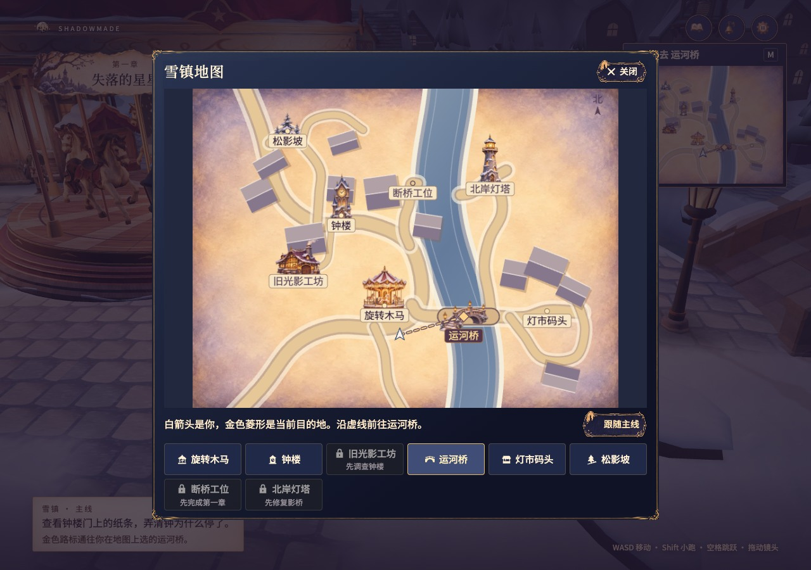

第一章
失落的星星
两件道具的影子补出一颗星。去掉风轮上的铜翼尖，星就少了一角。拼成的星飞回钟楼，钟声、街灯和木马依次苏醒。
看铜翼尖 · Aholo 8294283Aholo 3D 黑客松 · 游戏应用

平安夜，雪镇的钟停了。你是一道还没有形体的影子，循着一张纸条走进旧工坊，发现两件普通物品的影子合在一起，竟能拼出一颗星。
这是一款手绘绘本风格的 3D 解谜游戏。亲手摆动物件、挪动灯光，把影子变成能走过去的桥，重新点亮灯塔。故事结束时，你可以把亲手唤醒的雪镇做成一张圣诞贺卡。
从「开始」进入雪镇，再点钟楼门上的纸条。

从广场上的木马，到工坊里玩家亲手拿起的道具，以下模型都来自 Aholo Lux3D 的生成结果。点开任一件，可以转动三维模型、看游戏实拍和查任务号。
三关都用到了 Aholo 模型。换一件道具或挪一挪灯，玩家立刻就能看见影子怎么变。

第一章
两件道具的影子补出一颗星。去掉风轮上的铜翼尖，星就少了一角。拼成的星飞回钟楼，钟声、街灯和木马依次苏醒。
看铜翼尖 · Aholo 8294283
第二章
在灯下挪动两块桥板，让影子连到对岸，又避开薄冰。拼好的影子变成脚下的桥，带你过河去找灯塔。
看两块桥板 · Aholo 8297010
第三章
同一块幕布，从另一侧能看到不同线索。海灯已经照对位置，岸灯却还在冲淡影子。拉动遮光门，才能让归航灯重新亮起来。
看遮光门 · Aholo 8294293我们把 Aholo 生成的钟楼屋脊改成风轮铜翼尖，把集市柜台改成桥板，把书店门板改成遮光门。调整和拆件在 Blender 完成，再把模型放回游戏，测试它们在灯下实际投出的形状。
灯具任务 8297001 也提供了工坊投影灯和可拿取的铸铜灯胆。
